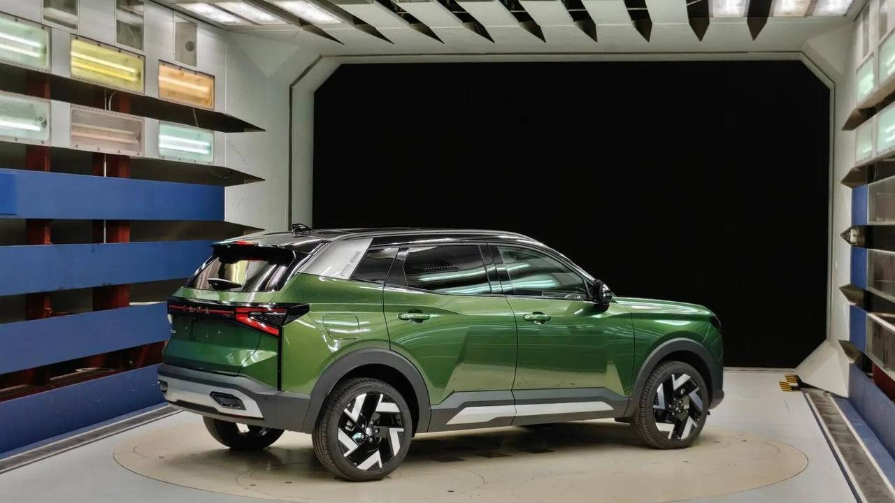

Тачки и Точка
@tachki
Тачки и Точка
@tachki
Lada Azimut будет стоить около 2 миллионов цену озвучили ТАСС.

Lada Azimut будет стоить около ₽2 миллионов — цену озвучили ТАСС.
Серийное производство кроссовера стартовало 25 сентября, но до начала продаж, по предварительным данным, ещё три-четыре недели. Окончательные цены и комплектации официально не объявлены.
На старте предложат бензиновые моторы ВАЗ 1,6 и 1,8 литра на 120 и 135 сил с шестиступенчатой механикой, а вариатор будет за доплату.
🚙 Тачки и Точка
Серийное производство кроссовера стартовало 25 сентября, но до начала продаж, по предварительным данным, ещё три-четыре недели. Окончательные цены и комплектации официально не объявлены.
На старте предложат бензиновые моторы ВАЗ 1,6 и 1,8 литра на 120 и 135 сил с шестиступенчатой механикой, а вариатор будет за доплату.
🚙 Тачки и Точка